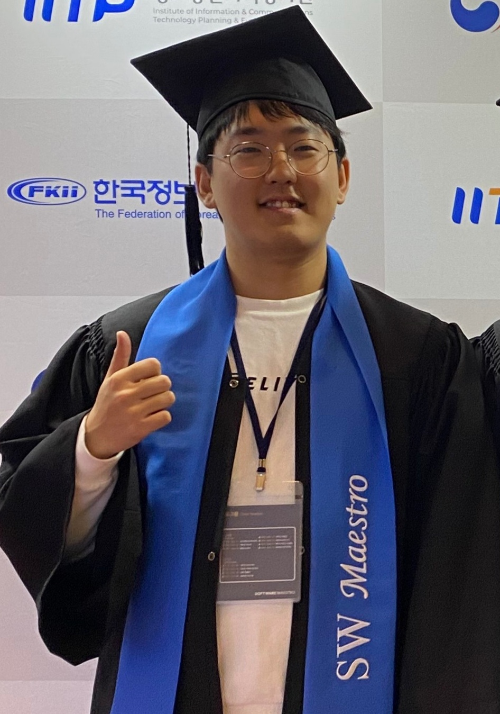
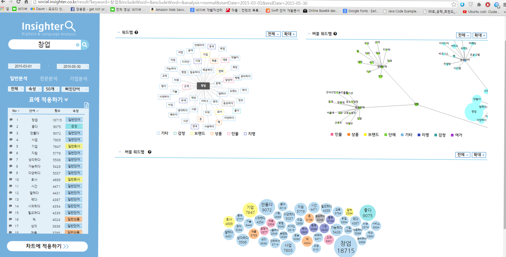

변현우 | 플랫폼 백엔드 엔지니어
1년차 주니어 개발자 , 27년차 시니어 몽상가
언젠가는 소프트웨어를 통해,
모두가 행복한 세상을 만들수 있다고 믿습니다.
Email : bhw1994@gmail.com

언젠가는 소프트웨어를 통해,
모두가 행복한 세상을 만들수 있다고 믿습니다.
Email : bhw1994@gmail.com
글로벌 서비스 제공을 위해 대규모 트래픽 처리 및 레이턴시 최소화가 필요했음
낮은 레이턴시와 수평 확장에 용이하도록,
Pubsub 기반 비동기 분산처리 시스템으로 기존 서비스를 재설계하여
기존과 동일한 서비스를 제공하는 플랫폼 개발
기존 노후화된 장비와 시스템으로, 유지보수 및 운영 리소스가 과다하게 소모되었음
Kubernetes 기반 컨테이너 환경으로 전환하여, 운영 / 배포 리스크 , 휴먼 에러 대폭감소함
소프트웨어 마에스트로 10기로 선발되어 활동함
웹사이트에서 자료를 찾을때 , 바로 메모를 남기고, 다른사람들과 메모를 공유하고 수정 할수 있는 플랫폼 개발
화상 회의 솔루션을 개발하는 중소기업과 연계하여,WebRTC 기반 다자간 영상통화 앱 개발함
Google FCM 이 Reliable 하지 않기 때문에, 신뢰성 있는 Protocol 개발 필요 했음
푸쉬 기반 통화 요청이 누락되지 않고 , Hand Over 발생시에도 세션을 재교환하여, Seamless 한 서비스를 가능하게 하는 프로토콜 정의 및 구현
컨텐츠 미디어 스타트업에서 계약직으로 근무함
기존 SNS 기반 사업영역에서 벗어나기 위해, 컨텐츠 업로드 및 커뮤니티 기능이 가능한 자체 플랫폼 개발
교내 창업동아리 활동중 ,중소기업청 투자 유치 하여 창업 함
국내 주요 포털을 크롤링하여 빅데이터를 수집 후 특정 키워드에 대한 데이터를 텍스트마이닝하여 ,시각화하는 웹서비스 개발
